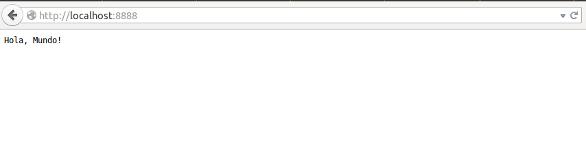

Ponemos en consola los siguiente comandos por orden:
sudo apt-get install curlcurl -sL https://deb.nodesource.com/setup | sudo bashsudo apt-get install -y nodejsLo primero que debemos saber, es que tenemos dos formas de trabajar con nodejs:
Creamos un fichero .js y en el pondremos:
var http = require('http'); para importar el módulo http.var server = http.createServer();cpara declarar e inicializar la variable server, donde creamos el server con una función del módulo que hemos importado.function control(peticion, respuesta) {respuesta.writeHead(200, {'content-type': 'text/plain'});respuesta.write('Hola, Mundo!');respuesta.end();}server.on('request',control); para que el server se encienda y realize la función control cuando reciba una petición.server.listen(8888); para asignarle un puerto que este escuchando.Ahora, con todo esto en un fichero, vamos a consola, lo abrimos con node y luego podremos ir a nuestro navegador y abrir el puerto que le hayais puesto y ver como funciona, en mi caso la dirección sería
localhost:8888
